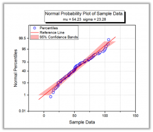
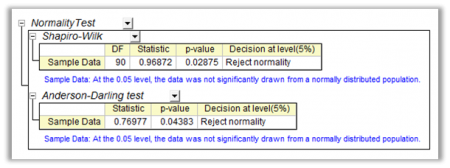

Ein Test auf Normalverteilung wird verwendet, um zu bestimmen, ob Stichprobendaten aus einer normalverteilten Grundgesamtheit (innerhalb einer gewissen Toleranz) gezogen wurden. Eine normalverteilte Grundgesamtheit der Stichproben ist eine Voraussetzung von mehreren statistischen Tests, wie dem Studenten-t-Test und der einfachen oder zweifachen ANOVA. Wenn die Annahme von Normalverteilung nicht erfüllt wird, sind die Ergebnisse der Tests nicht zuverlässig.
|  |  |
Sechs verschiedene Tests auf Normalverteilung sind in Origin verfügbar. Bitte sehen Sie sich die einfache Regel zur Auswahl der Methode in der untenstehenden Tabelle an.
Weitere Einzelheiten können Sie im Kapitel Tests auf Normalverteilung wählen und Ergebnisse interpretieren nachlesen.
| Test auf Normalverteilung | Zusammenfassung |
|---|---|
| Shapiro-Wilk | Gängiger Test auf Normalverteilung, funktioniert jedoch nicht gut bei duplizierten Daten oder großen Datensätzen. |
| Kolmogorov-Smirnov | Testet die Gaussian-Verteilung mit spezifischem Mittelwert und Varianz |
| Lilliefors | Kolmogorov-Smirnov-Test mit korrigiertem P Eignet sich am besten für symmetrische Verteilungen mit kleinen Stichproben |
| Anderson-Darling | Gibt für einige Datensätze bessere Ergebnisse aus als der Kolmogorov-Smirnov-Test. |
| D'Agostino-K | Basiert auf Transformationen der Stichprobenkurtosis und -schiefe. Besonders effektiv im Fall von "nicht normalverteilten" Werten. |
| Chen-Shapiro | Erweitert den Shapiro-Wilk-Test ohne Leistungsverlust. Unterstützt einen begrenzten Stichprobenumfang (10 ≤ n ≤ 2000). |
Die fehlenden Werte in dem Datenbereich werden aus der Analyse ausgeschlossen.
Ab Origin 2015 werden fehlende Werte im Gruppierungsbereich und die entsprechenden Datenwerte aus der Analyse ausgeschlossen. In den älteren Versionen wurden die fehlenden Werte in dem Gruppierungsbereich als eine Gruppe betrachtet.
Um einen Test auf Normalverteilung über das Menü durchzuführen:
|
Themen, die in diesem Abschnitt behandelt werden: |